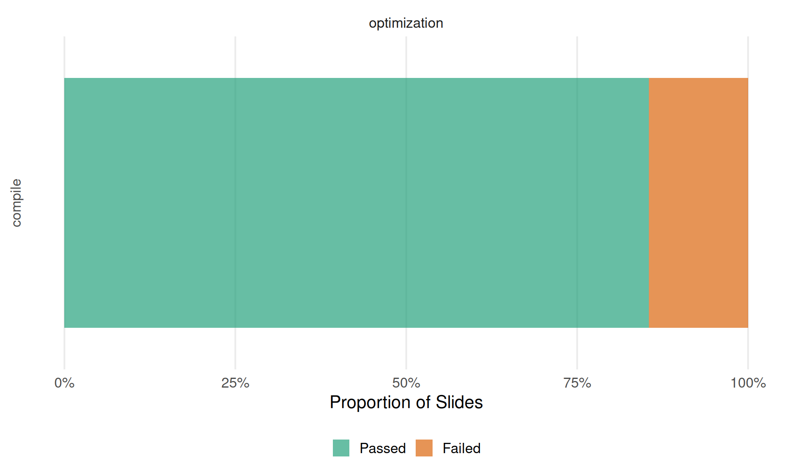

This document tabulates the state of the slides in
lecture_*/slides/<topic>/ based on
lecture_*/slides-pdf/Displaying the latest commits of the lecture service repository and each of the currently included lectures (for debugging and race condition mitigation (kind of)).
| Branch | Last Commit | By | Message |
|---|---|---|---|
| main | 2025-12-16 14:24:45 | Lukas Burk | Minor additions for exercise preamble (via i2ml) (p 2) |
| Lecture | Branch | Last Commit | By | Message |
|---|---|---|---|---|
| lecture_optimization | main | 2026-01-13 09:08:18 | GitHub | Merge pull request #56 from slds-lmu/chapter-10-cleanup |
If you’re missing a lecture here after rendering this site
interactively, you might have to add them to the
included_lectures files or ensure they are downloaded
correctly.

lecture_advml/slides/gaussian-processes/slides-gp-bayes-lm.tex
\___________/ \________________/ \________________/
lecture topic <slide-name>
lecture_advml/slides-pdf/slides-gp-bayes-lm.pdf
\___________________/
pdf_static / "Reference PDF"Tables are organized by lecture (first level) and lecture topics
corresponding to folders in slides/<topic> (second
level), with a table per topic. Topics ignore certain folders like
attic and all.
<slide-name> with a
link to the compiled .tex file (if it compiles).latexmk -pdf. This can depend on the
availability of specific LaTeX dependencies, but assuming they are not
the issue, this usually indicates syntax issues or things like
\includegraphics calls using relative paths that work on
Overleaf but not locally.<slide-name>.tex against
slides-pdf/<slide-name>.pdf using
diff-pdf-visually:
diff-pdf (at a lower resolution
than the originals).10 topics with a total of 62 slides
| Slide | Compiles? | Note |
|---|---|---|
| _convergence_rates | ❌ |
908: ! LaTeX Error: Missing begin{document}. 908: See the LaTeX manual
or LaTeX Companion for explanation. 908: Type H |
| slides-concepts-1-differentiability | ✅ | |
| slides-concepts-2-matrix-calculus | ✅ | |
| slides-concepts-3-convexity | ✅ | |
| slides-concepts-4-conditions-for-optimality | ✅ | |
| slides-concepts-5-taylor | ✅ | |
| slides-concepts-6-qfun-1 | ✅ | |
| slides-concepts-7-qfun-2 | ✅ |
| Slide | Compiles? | Note |
|---|---|---|
| slides-problems-1-unconstrained | ✅ | |
| slides-problems-2-constrained | ✅ | |
| slides-problems-3-other | ✅ |
| Slide | Compiles? | Note |
|---|---|---|
| slides-univariate-1-golden-ratio | ✅ | |
| slides-univariate-2-brent | ✅ |
| Slide | Compiles? | Note |
|---|---|---|
| macros | ❌ | 8: ! Undefined control sequence. 8: l.203 RestyleAlgo 8: {algoruled} |
| slides-multicrit-1-intro | ❌ |
553: ! LaTeX Error: File ‘algorithm2e.sty’ not found. 553: Type X to
quit or |
| slides-multicrit-2-evolutionary | ❌ |
553: ! LaTeX Error: File ‘algorithm2e.sty’ not found. 553: Type X to
quit or |
| slides-multicrit-3-bo | ❌ |
553: ! LaTeX Error: File ‘algorithm2e.sty’ not found. 553: Type X to
quit or |
| slides-multicrit-4-practical | ❌ |
553: ! LaTeX Error: File ‘algorithm2e.sty’ not found. 553: Type X to
quit or |